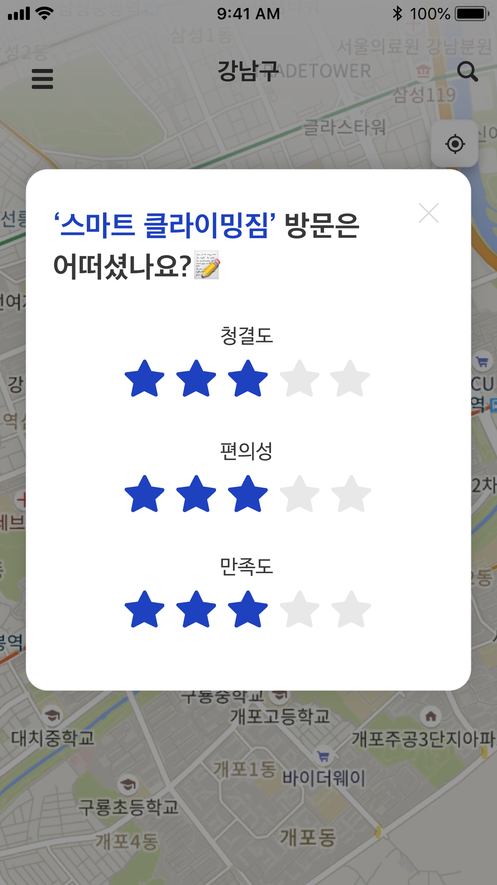
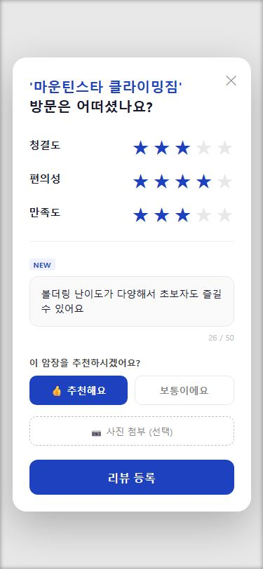
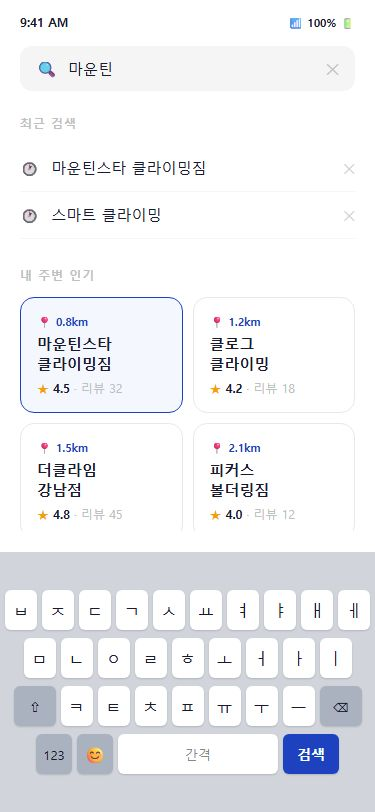

Step 04 · 설계
데이터 기반 3가지 핵심 이터레이션
Research Question 검증에서 발견한 문제를, AS-IS → TO-BE로 해결했다
#01
클라이밍장 상세 —
정보가 부족하다
"운영시간만 보고는 갈지 말지 결정 못 해요. 난이도가 내 수준에 맞는지가 제일 중요한데."
— 참여자 A
AS-IS

TO-BE

→난이도표 · 시설 정보 · 방문후기 추가
RQ2에서 발견 — 의사결정에 필요한 정보의 종류가 달랐다
#02
리뷰 작성 —
별점만으로 부족하다
"별점 3개로는 이 암장이 어떤 곳인지 알 수 없어요. 한마디라도 쓸 수 있으면 좋겠어요."
— 참여자 B
AS-IS

TO-BE

→한줄 리뷰 · 추천 여부 · 사진 첨부 추가
별점만으로는 다음 방문자에게 정보가 전달되지 않는다
#03
검색 빈 상태 —
가이드가 없다
"검색을 눌렀는데 뭘 써야 할지 모르겠어요. 인기 있는 곳 먼저 보여주면 좋겠어요."
— 참여자 C
AS-IS

TO-BE

→최근 검색 · 내 주변 인기 암장 표시
빈 상태가 탐색의 시작점을 제공해야 한다